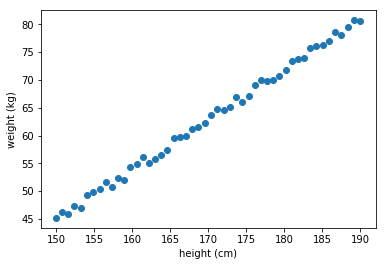
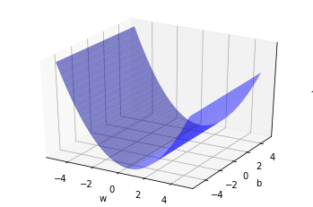
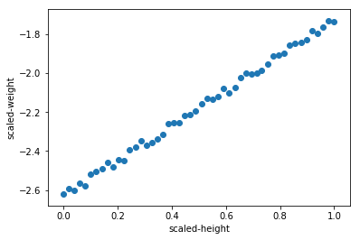
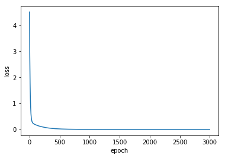
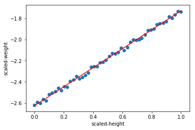

선형 회귀 (Linear Regression)
딥러닝의 세계로 들어가기 위해 알아야 하는 첫번째 모델인 선형 회귀(Linear Regression)에 대해 알아보고 keras를 이용해서 모델링을 해보자!
실제로 돌려 보고 싶으면 구글 코랩으로 ~

문제 (Problem)
💰 고객
우리 학교에는 ‘몸짱반’이 있어요.
여기에 들어가기 위해서는
키와 몸무게의
특별한 조건이 있는거 같아요.‘몸짱반’에 들어간 친구들의
키와 몸무게 데이터를 가지고
키가 주어지면
‘몸짱반’에 들어가기 위한 몸무게를
자동으로 알고 싶어요…만들어 줄 수 있지요?
데이터는 아래에 있어요
height_data= [150.0, 150.8, 151.6, 152.4, 153.2, 154.0, 154.8, 155.7, 156.5, 157.3, 158.1, 158.9, 159.7, 160.6, 161.4, 162.2, 163.0, 163.8, 164.6, 165.5, 166.3, 167.1, 167.9, 168.7, 169.5, 170.4, 171.2, 172.0, 172.8, 173.6, 174.4, 175.3, 176.1, 176.9, 177.7, 178.5, 179.3, 180.2, 181.0, 181.8, 182.6, 183.4, 184.2, 185.1, 185.9, 186.7, 187.5, 188.3, 189.1, 190.0]
weight_data= [45.198, 46.212, 45.850, 47.389, 46.920, 49.275, 49.790, 50.354, 51.694, 50.789, 52.301, 52.015, 54.277, 54.879, 56.066, 55.140, 55.808, 56.516, 57.401, 59.633, 59.815, 59.843, 61.265, 61.569, 62.276, 63.741, 64.764, 64.674, 65.149, 66.910, 66.000, 67.076, 69.120, 69.940, 69.820, 69.971, 70.625, 71.856, 73.483, 73.709, 74.028, 75.685, 76.123, 76.346, 76.917, 78.641, 78.157, 79.479, 80.725, 80.582]데이터 분석 (Data Analysis)
데이터가 어떤 모양인지 확인해 보자.
%matplotlib inline
import matplotlib.pyplot as plt
plt.scatter(height_data, weight_data)
plt.xlabel('height (cm)')
plt.ylabel('weight (kg)')
plt.show()
⚙️ 엔지니어
키가 커질 수록 몸무게가 선형(Linear)적으로 늘어나네~
직선으로 모델링을 할 수 있겠다.모델링 작업이 편안하도록 주어진 데이터를 변환하자!
데이터 변환 (Data Transformation)
Keras, tensorflow등의 머신런닝 프레임워크를 사용하기 위해서는
각각이 요구하는 데이터의 형식 및 모양에 맞추어서 변환을 해 주어야 한다.
여기서는 키와 몸무게 데이터를 각각 매트릭스로 변환하자
- 열의 크기는 데이터의 개수
- 컬럼의 크기는 측정한 항목의 개수
키 값을 입력하면 ‘몸짱반’에 들어갈 수 있는 몸무게를 예측해야 한다. 키 데이터를 입력 x라고 하고 몸무게 데이터를 출력 y라고 하자
- 키 데이터는 50개의 ‘키’를 측정한 데이터가 있으므로 50X1 매트릭스
- 몸무게 데이터는 50개의 ‘몸무게’를 측정한 데이터가 있으므로 50X1 매트릭스이다.
⚙️ 엔지니어
모델링을 하면서 골치 아픈 것 중에 하나는
입력과 출력의 모양(Shape)를 맞추어 주는 것이다.
복잡하다 … 잘못하면 다크-디멘션에 빠진다…
뒤에서 더 자세하게 설명할 기회가 있을 것이다.
import numpy as np
x = np.array(height_data).reshape(len(height_data), 1)
y = np.array(weight_data).reshape(len(weight_data), 1)
print('x = ', x[:10])
print('x.shape= ', x.shape)
print('\ny = ', y[:10])
print('y.shape= ', y.shape)x = [[150. ]
[150.8]
[151.6]
[152.4]
[153.2]
[154. ]
[154.8]
[155.7]
[156.5]
[157.3]]
x.shape= (50, 1)
y = [[45.198]
[46.212]
[45.85 ]
[47.389]
[46.92 ]
[49.275]
[49.79 ]
[50.354]
[51.694]
[50.789]]
y.shape= (50, 1)
⚙️ 엔지니어
좋았어!
그럼 변환된 데이터로 선형회귀(Linear Regression) 모델링을 시작해 보지
선형 모델링 (Linear Modeling)
모델을 \(y=wx+b\)로 놓고
주어진 데이터에 가장 비슷한 직선을 표시하는 \(w\)와 \(b\)를 찾아 가는 것이 선형 모델링이다.
\(w\)는 직선의 기울기고 \(b\)는 \(y\)절편이라고 배웠지만, 이제 부터는 \(w\)는 가중치(weight) 로, \(b\)는 바이어스(bias) 로 부르자
⚙️ 엔지니어)
그런데… \(w\)와 \(b\)를 어떻게 구하면 되지?
손실 함수 (Loss function)
⚙️ 엔지니어
남여 커플 10명이 모여서 게임을 시작한다.
남자는 여자친구의 몸무게를 말하고 가장 비슷한 몸무게를 맞추는 커플이 1등이 된다.
1등을 정하는 방법은 남자가 말한 몸무게와 여자친구가 말한 실제 몸무게의 차이를 점수로 계산하고,
가장 점수가 낮은(가장 비슷하게 맞춘) 커플에게 1등을 주면 된다.실제로 점수를 계산할 때에는 단순한 차이값을 사용하지 않고
차이값을 제곱하고 반으로 나누어 준 값을 사용한다.그리고 커플 10명 전체에 대한 점수는 각 커플들의 점수의 평균을 내면 된다.
하나의 데이터 세트(\(x^{(i)}, y^{(i)}\))를 사용해서 모델에서 얻은 값과 실제 값과의 차이(Loss)를 구하는 함수를 구해보자.
여기서 \(x^{(i)}\)는 i번째 \(x\)값이고 \(y^{(i)}\)은 i번째 \(y\)값이다.
일단 \(w\)와 \(b\)는 임의의 값으로 놓자. 그리고 모델에 \(x^{(i)}\)을 넣고 계산한 결과 값 \({\hat y}^{(i)}\)과 실제 값 \(y^{(i)}\)의 차이를 구한다. 선형 모델링에서는 제곱 오차(squred error)를 사용한다.
\(L({\hat y}^{(i)}, y^{(i)})={1\over2}({\hat y}^{(i)}-y^{(i)})^2\)
모든 데이터(m개의 데이터 세트)로 부터 얻은 것을 평균(mean squred error)한것이 손실 함수(Loss function)이다. 손실 함수는 \(w\)와 \(b\)의 함수로 나타낼 수 있다.
\({\large J}(w, b) = {1\over m}\sum_{i=1}^m L({\hat y}^{(i)}, y^{(i)}) \\ \\ \hspace{2.9em}= {1\over {2m}}\sum_{i=1}^m ({\hat y}^{(i)}-y^{(i)})^2\)
⚙️ 엔지니어
손실 함수
\({\large J}(w, b) = {1\over {2m}}\sum_{i=1}^m ({\hat y}^{(i)}-y^{(i)})^2\)
가 최소가 되는 \(w\)와 \(b\)를 찾으면 되겠군!
손실 함수 (Loss function) 시각화
우선 손실 함수(Loss function)가 어떻게 생겨 먹었는지 살펴 보자.
x축을 \(w\)로 놓고, y축을 \(b\)로 놓고, z축을 손실 함수 \({\large J}(w, b)\)로 그래프를 그려 보면 어떻게 최소값을 찾을지 감이 올 것 같다.
\(w\)는 \(-5\leqq w \leqq 5\) 정도로 잡고,
\(b\)는 \(-5\leqq b \leqq 5\)으로 잡아보자.
import numpy as np
from sklearn.metrics import mean_squared_error
from mpl_toolkits import mplot3d
# W,b의 범위를 결정한다.
w = np.arange(-5.0, 5.0, 0.1)
b = np.arange(-5.0, 5.0, 0.1)
j_array = []
W, B = np.meshgrid(w, b)
# w, b를 하나씩 대응한다.
for we, be in zip(np.ravel(W), np.ravel(B)):
y_hat = np.add(np.multiply(we, x), be)
# Loss function
mse = mean_squared_error(y_hat, y) / 2.0
j_array.append(mse)
# 손실(Loss)을 구한다.
J = np.array(j_array).reshape(W.shape)
# 서피스 그래프를 그린다.
fig = plt.figure()
ax = plt.axes(projection="3d")
ax.plot_surface(W, B, J, color='b', alpha=0.5)
ax.set_xlabel('w')
ax.set_ylabel('b')
ax.set_zlabel('J')
ax.set_zticks([])
plt.show()
⚙️ 엔지니어
U 모양으로 구부러진 모양이다!
\(w\)가 1근처에서 손실 함수가 최소값을 가지는 것을 볼 수 있다.\(b\)는 손실 함수가 최소가 되는 값이 잘 보이지 않는다.
확대를 하면 보이겠지만 귀찮다.이제 램덤하게 \(w\)와 \(b\)값이 주어지더라도
자동으로 손실 함수의 최소값을 찾는 방법을 찾으면 된다.어떻게 자동으로 찾지?
경사 하강법 (Gradient Descent)
⚙️ 엔지니어
등산에서 쓰는 말처럼 들리는 이 방법은
내가 현재 있는 산의 위치에서
경사(기울기)를 확인하고
경사가 아래인 방향으로 한걸음 내려가고,
경사를 확인하고,
또 한걸음 내려가고를
계속 반복하면
결국 골짜기 가장 아래로 도착할 수 있다는 방법이다.여기서 경사를 확인 하는 방법이
미분이다.잘 모르겠다고?
아래에 간단한 예제를 보자
이차 함수에서 미분으로 최소값 찾기
\(y=x^2-2x+4\)에서 \(y\)가 최소가 되는 \(x\)값을 미분으로 구해 보자.
* 참고로 \(y=(x-1)^2 +3\)으로 정리하면 \(x=1\)일때 \(y\)는 최소값 3을 갖는다는 것을 알 수 있다.

- \(x\)값을 아무거나 하나 선택한다. 여기서는 \(x=3\)을 선택하자
- \(x=3\)일때 순간 변화율을 계산한다. 순간 변화율은 미분이다. \({dy\over dx}=2x-2\) 이므로 순간 변화율은 4이다.
- 순간 변화율이 0보다 크면 \(x\)를 -방향으로 이동한다. 이떄 얼마나 이동하느냐가 중요한데 순간 변화율 4만큼 이동하면 최소값을 지나쳐 버린다. 따라서 조금씩 움직이도록 순간 변화율에 0.01배 만큼 움직이게 한다. (\(x\)를 0.04 만큼 -방향으로 이동한다. 즉 \(x=2.96\))
- 순간 변화율이 0보다 작으면 x를 +방향으로 이동한다. 위와 마찬가지로 미분값에 0.01배 만큼 움직이게 한다. 여기서 0.01을 learning rate라고 하고 \(\alpha\)로 표시한다.
- 2번에서 4번까지의 과정을 epoch 라고 한다.
업데이트 된 x값을 가지고 2, 3, 4번을 반복한다. 1000번 반복한다. (1000 epoch)
def derivative(x): dydx = 2*x-2 return dydx epoch = 1000 # 반복 회수 learning_rate = 0.01 # alpha xx = 3 # 초기 x값 for i in range(epoch): xx = xx - learning_rate * derivative(xx) print('x for minimum y is: ', xx)x for minimum y is: 1.0000000033659349
\(w\)와 \(b\)에 대한 손실 함수의 순간 변화율(미분값)을 구해서 반복해서 업데이트를 해 주면 자동으로 손실 함수의 최소 값에 도달 할 수 있다.
수식으로 표현해보자
REPEAT(epoch) {
\(w:=w-\alpha {\partial {J(w,b)}\over \partial w}\)
\(b:=b-\alpha {\partial{J(w,b)}\over \partial b}\) , \(\alpha=0.01\) learining rate
}
⚙️ 엔지니어
아하! 손실함수의 최소값을 찾아 가는 것이 기계(Machine)가 학습(Learning)하는 방법이구나!
정리
선형 모델(Linear model)을 만드는 방법을 정리해 보자.
- \(\hat{y}=wx+b\) 함수를 정의한다.
- 손실 함수 (Loss function)를 정의한다. 여기서는 평균 제곱 오차(mean squared error) 를 사용한다.
- 손실 함수의 최소값을 찾는 방법을 선택한다. 여기서는 경사 하강법(gradient descent) 을 사용한다. 그리고 최소값을 찾는 방법(알고리즘)을 옵티마이저(Optimizer) 라고 부르겠다.
- 반복할 회수(epoch)를 결정한다.
- 주어진 조건으로 모델을 최적화(fit) 시킨다.
텐서플로우(Tensorflow)로 모델링(Modeling)
⚙️ 엔지니어
좋았어!
이제 텐서플로우(Tensorflow)가 냠냠한
케라스(Keras)를 이용해서 구현을 해보자!
정규화(Normalization)
정규값 = (현재값 - 최소값) / (최대값-최소값) 으로 정규화 하자
그래프를 보면,
데이터의 모양은 그대로 유지하면서도
x축의 값이 0에서 1사이로 변환된 것을 볼 수 있다.
⚙️ 엔지니어
내가 해봐서 아는데…
이거 안하면 엉뚱한 답이 나온다. 꼭 해야됨!
from sklearn import preprocessing
mm_scaler = preprocessing.MinMaxScaler()
X_train = mm_scaler.fit_transform(x)
Y_train = mm_scaler.transform(y)
plt.scatter(X_train, Y_train)
plt.xlabel('scaled-height')
plt.ylabel('scaled-weight')
plt.show()
Keras를 가지고 모델링(Modeling)하기
⚙️ 엔지니어
4줄로 모델링이 가능하다!
케라스 만세!
from tensorflow.keras import Sequential
from tensorflow.keras.layers import Dense
# 모델을 준비한다.
model = Sequential()
# 입력 변수의 개수가 1이고 출력 개수가 1인 y=wx+b 를 생성한다.
model.add(Dense(1, input_dim=1))
# Loss funtion과 Optimizer를 선택한다.
model.compile(loss='mean_squared_error', optimizer='sgd')
# epochs만큼 반복해서 손실값이 최저가 되도록 모델을 훈련한다.
hist = model.fit(X_train, Y_train, epochs=3000, verbose=0) WARNING: Logging before flag parsing goes to stderr.
W0901 10:10:02.460783 139866692384576 deprecation.py:506] From /home/dataman/anaconda3/lib/python3.7/site-packages/tensorflow/python/ops/init_ops.py:1251: calling VarianceScaling.__init__ (from tensorflow.python.ops.init_ops) with dtype is deprecated and will be removed in a future version.
Instructions for updating:
Call initializer instance with the dtype argument instead of passing it to the constructor
손실값의 변화를 그래프로 확인
plt.plot(hist.history['loss'])
plt.xlabel('epoch')
plt.ylabel('loss')
plt.show()
⚙️ 엔지니어
반복적으로 학습할 수록 손실(Loss)이 0에 가깝게 된다.
굿잡!
\(w\)와 \(b\)값을 확인
w, b = model.get_weights()
w = w[0][0]
b = b[0]
print('w: ', w)
print('b: ', b)w: 0.8991271
b: -2.6255682
그래프로 확인
x_scale = mm_scaler.transform(x)
y_scale = mm_scaler.transform(y)
plt.scatter(x_scale, y_scale)
plt.plot(x_scale, w*x_scale+b, 'r')
plt.xlabel('scaled-height')
plt.ylabel('scaled-weight')
plt.show()
해결 (Solution)
⚙️ 엔지니어
고객님~ 원하시는 솔루션입니다.
input_height에 원하시는 키를 입력하시면
‘몸짱반’에 들어 갈 수 있는 몸무게가 자동으로 계산됩니다.
input_height = 178.0
input_x = mm_scaler.transform(np.array([input_height]).reshape(-1, 1))
predict = model.predict(input_x)
predict = mm_scaler.inverse_transform(predict)
print('몸짱반에 들어갈 수 있는 몸무게는 {:.2f} kg 입니다'.format(predict[0][0]))몸짱반에 들어갈 수 있는 몸무게는 70.15 kg 입니다